West Sussex's Specialist Masonry Restoration Experts
Led by Garry, GM Repointing has been protecting homes and commercial properties across West Sussex for over 16 years, restoring brickwork and preventing costly water damage before it takes hold.
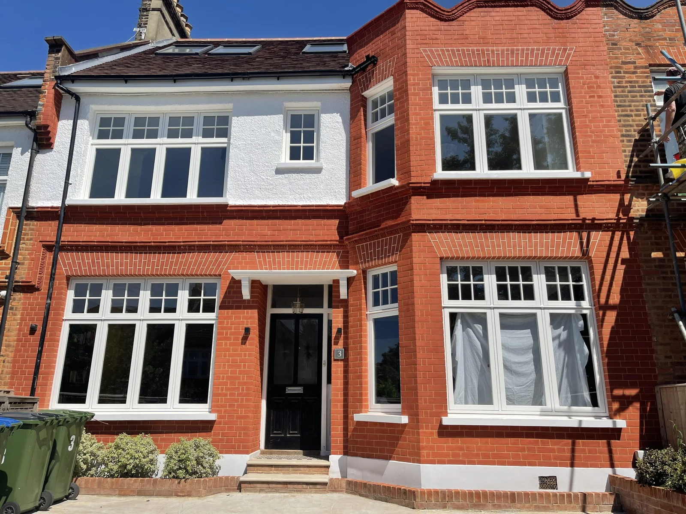
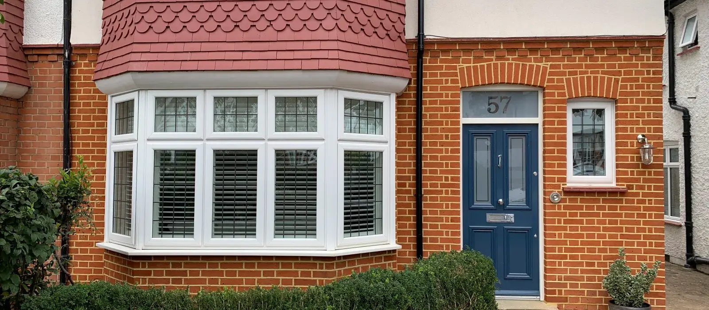
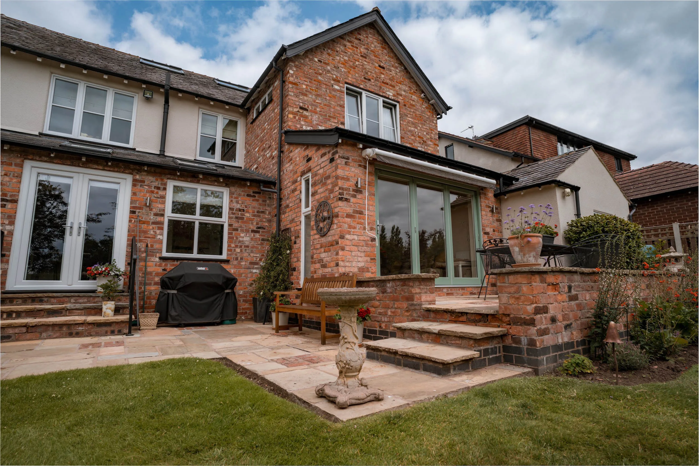
Precision Masonry. Lasting Protection.
GM Repointing is a specialist masonry restoration company based in Bognor Regis, led by Garry with over 16 years of hands-on experience. Every job focuses on one core goal: stopping water from getting into your property through failing mortar joints and damaged brickwork.
Garry works directly on every project, bringing the same meticulous attention to detail to a single garden wall as to a full commercial facade. No sub-contractors, no shortcuts. Just expert masonry restored to last.
0+
Years of Experience
Specialist
Masonry Skills
0%
Satisfaction Focus
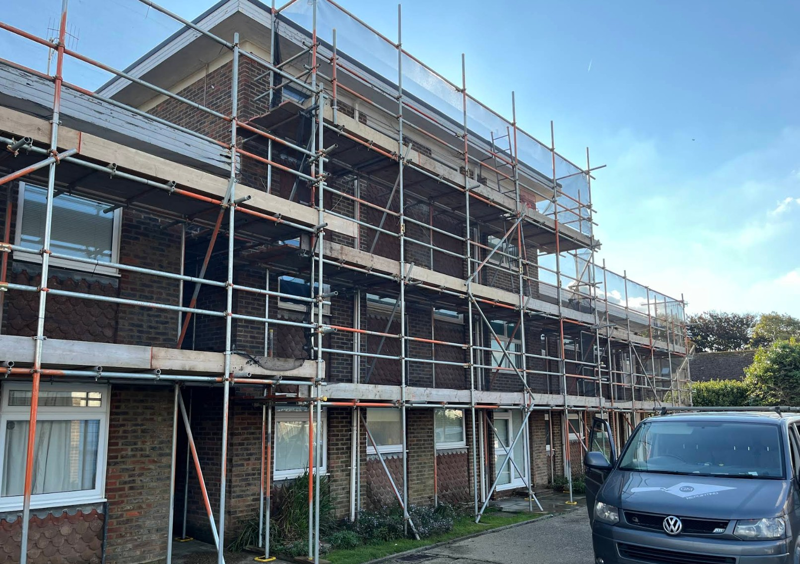
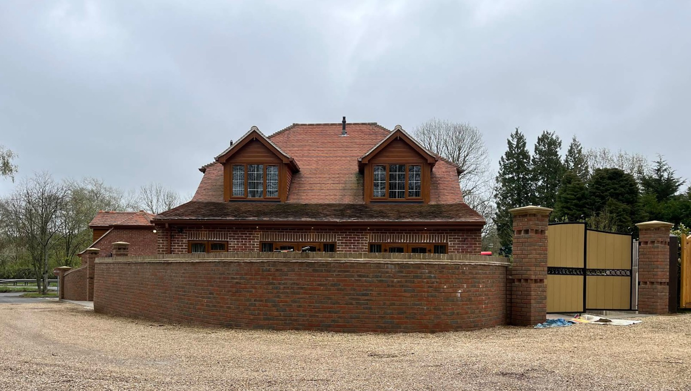
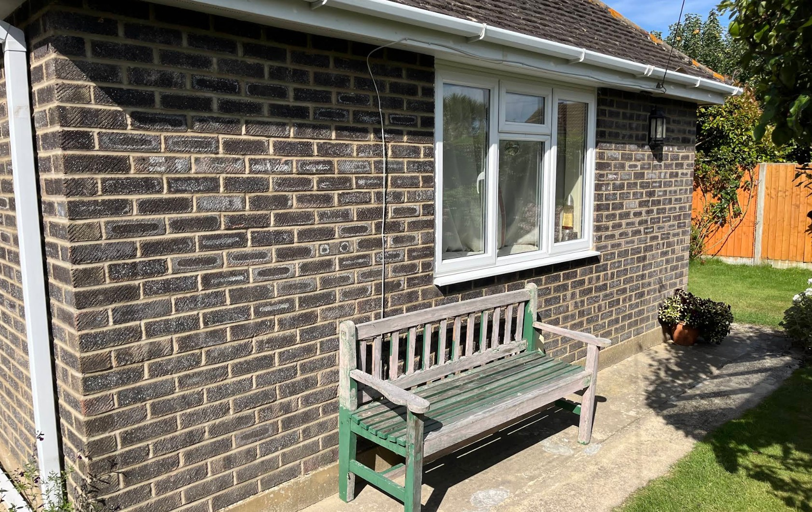
Our Specialist Masonry Services
Every service is carried out by Garry personally, ensuring consistent quality and precision from start to finish.
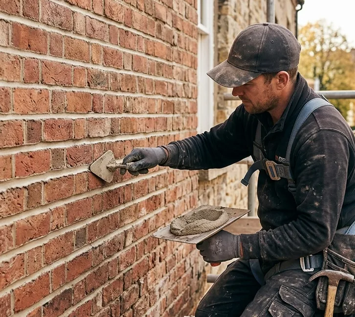
Brick Repointing
Specialist extraction and careful restoration of failing or deteriorated mortar joints, preventing water ingress and preserving the structural integrity of your property.
Perfect for
Homes and commercial buildings with crumbling, cracked, or receding mortar joints.
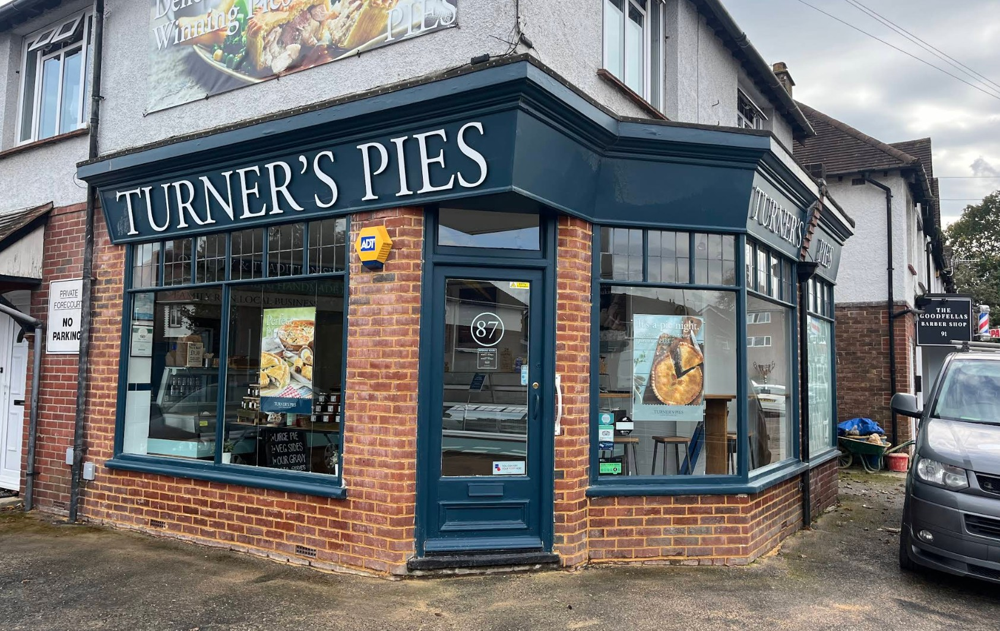
Brickwork Repairs
Expert masonry interventions including precise replacements and structural fixes for spalled, cracked, damaged, or loose bricks across all types of masonry.
Perfect for
Properties with spalled, broken, or structurally compromised brickwork that needs lasting repair.
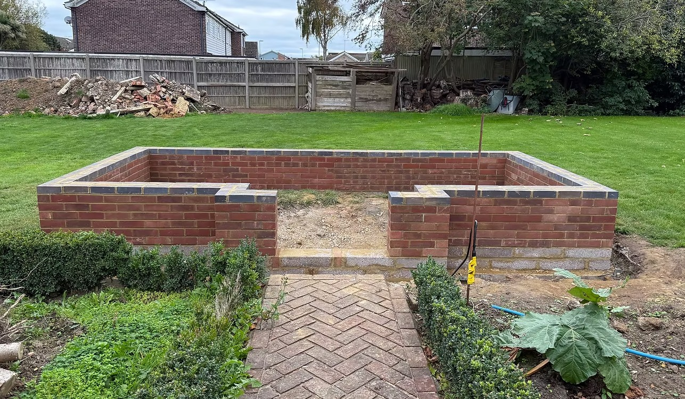
Garden Walls
Dedicated structural repair and aesthetic restoration for exterior brick garden walls, keeping them safe, stable, and looking their best for years to come.
Perfect for
Homeowners with leaning, crumbling, or weathered garden and boundary walls needing attention.
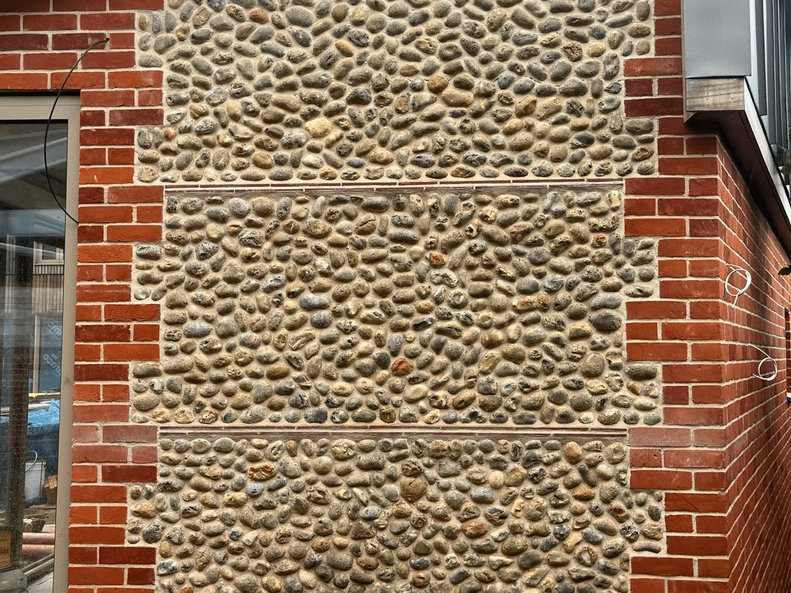
Flintwork
Specialist traditional masonry skills for the precise installation, repair, and repointing of flintwork facades and structures, a craft requiring years of dedicated practice.
Perfect for
Period and rural properties with traditional flint facades, walls, or features in need of expert attention.
See the Difference We Make
Drag the slider to reveal the transformation. Deteriorated mortar and stained brickwork restored to a clean, watertight finish.
View Full GalleryGet in Touch for a Free Survey
Call Garry on 07368 510500, send a message via the contact form, or drop an email to gary@gmrepointing.co.uk. He will arrange a convenient time to visit your property and take a proper look, at no charge and with no obligation to proceed.
We Survey and Quote the Work
Garry inspects the mortar joints, brickwork condition, and any areas of concern, then provides a clear written quote with no hidden costs. You will know exactly what the work involves and what it will cost before anything starts.
We Get to Work
Using the correct mortar mix for your property's age and material, Garry carefully rakes out and renews the failing joints. The result is tidy, durable, and fully watertight, with minimal disruption to you throughout.
Final Inspection and Sign-Off
Once the work is complete, Garry walks you through the finished result and ensures you are completely satisfied before leaving the site. The area is left clean and tidy, and your property is protected for years to come.
How We Work
Getting your masonry work sorted is straightforward. Garry keeps everything clear, honest, and professional from the very first call through to the final sign-off.
Book Your Free SurveyTrusted Across West Sussex
Real feedback from homeowners and property owners across Bognor Regis and the wider West Sussex area.
"Garry repointed our entire Victorian terrace and the result is immaculate. He matched the original mortar colour perfectly and left the site spotless. Couldn't be happier."
Sarah T., Chichester
"Very professional from start to finish. Turned up when he said he would, kept the site tidy, and the price was exactly as quoted. Highly recommend."
David R., Worthing
"Had a badly cracked garden wall that had been letting in damp for years. Garry sorted it in a day, the repair is solid and looks great. Would definitely use again."
Mark H., Littlehampton
"Garry carried out flintwork repairs on our period cottage and the craftsmanship is brilliant. He clearly knows what he is doing and took real care to match the existing finish."
Caroline P., Arundel
"Called Garry about some spalling bricks on the front of our house. He was round within a few days, explained the options clearly, and the work was done to a high standard."
James W., Rustington
"We had repointing done on a long stretch of boundary wall. Garry was thorough, reasonably priced, and explained everything before starting. Excellent job."
Helen M., Selsey
"Garry came out to look at our chimney stack, which had been letting in water for a while. He repointed it and the problem is completely resolved. Reliable and tidy."
Tom B., Bognor Regis
"Had the rear elevation of our 1930s semi repointed. Garry used the right lime mortar mix and the difference is remarkable. The damp patches have gone and it looks fantastic."
Rachel A., Shoreham-by-Sea
"Garry restored the flintwork on our old farmhouse outbuilding. A specialist job done properly. He took his time, the results are outstanding, and the price was fair."
Peter S., Midhurst
"Really pleased with the garden wall repointing. Garry was friendly and professional, gave an honest assessment, and the finished result is neat and solid. Highly recommend."
Linda F., Haywards Heath
"Garry repointed our entire Victorian terrace and the result is immaculate. He matched the original mortar colour perfectly and left the site spotless. Couldn't be happier."
Sarah T., Chichester
"Very professional from start to finish. Turned up when he said he would, kept the site tidy, and the price was exactly as quoted. Highly recommend."
David R., Worthing
"Had a badly cracked garden wall that had been letting in damp for years. Garry sorted it in a day, the repair is solid and looks great. Would definitely use again."
Mark H., Littlehampton
"Garry carried out flintwork repairs on our period cottage and the craftsmanship is brilliant. He clearly knows what he is doing and took real care to match the existing finish."
Caroline P., Arundel
"Called Garry about some spalling bricks on the front of our house. He was round within a few days, explained the options clearly, and the work was done to a high standard."
James W., Rustington
"We had repointing done on a long stretch of boundary wall. Garry was thorough, reasonably priced, and explained everything before starting. Excellent job."
Helen M., Selsey
"Garry came out to look at our chimney stack, which had been letting in water for a while. He repointed it and the problem is completely resolved. Reliable and tidy."
Tom B., Bognor Regis
"Had the rear elevation of our 1930s semi repointed. Garry used the right lime mortar mix and the difference is remarkable. The damp patches have gone and it looks fantastic."
Rachel A., Shoreham-by-Sea
"Garry restored the flintwork on our old farmhouse outbuilding. A specialist job done properly. He took his time, the results are outstanding, and the price was fair."
Peter S., Midhurst
"Really pleased with the garden wall repointing. Garry was friendly and professional, gave an honest assessment, and the finished result is neat and solid. Highly recommend."
Linda F., Haywards Heath
Leave Us a Google Review
Your feedback helps other homeowners in West Sussex find a trusted local masonry specialist. It takes less than a minute and means a great deal to us.
Write a ReviewScan to Review on Google
FAQs
Have a question not answered here? Get in touch directly and Garry will be happy to help.
Ask Us AnythingWhat areas do you cover?
How do I know if my pointing needs replacing?
Do you offer free surveys and quotes?
Are you fully insured?
Can you match the original mortar colour?
How long does repointing typically take?
What causes mortar to fail?
Do you work on both domestic and commercial properties?
How do I get started?
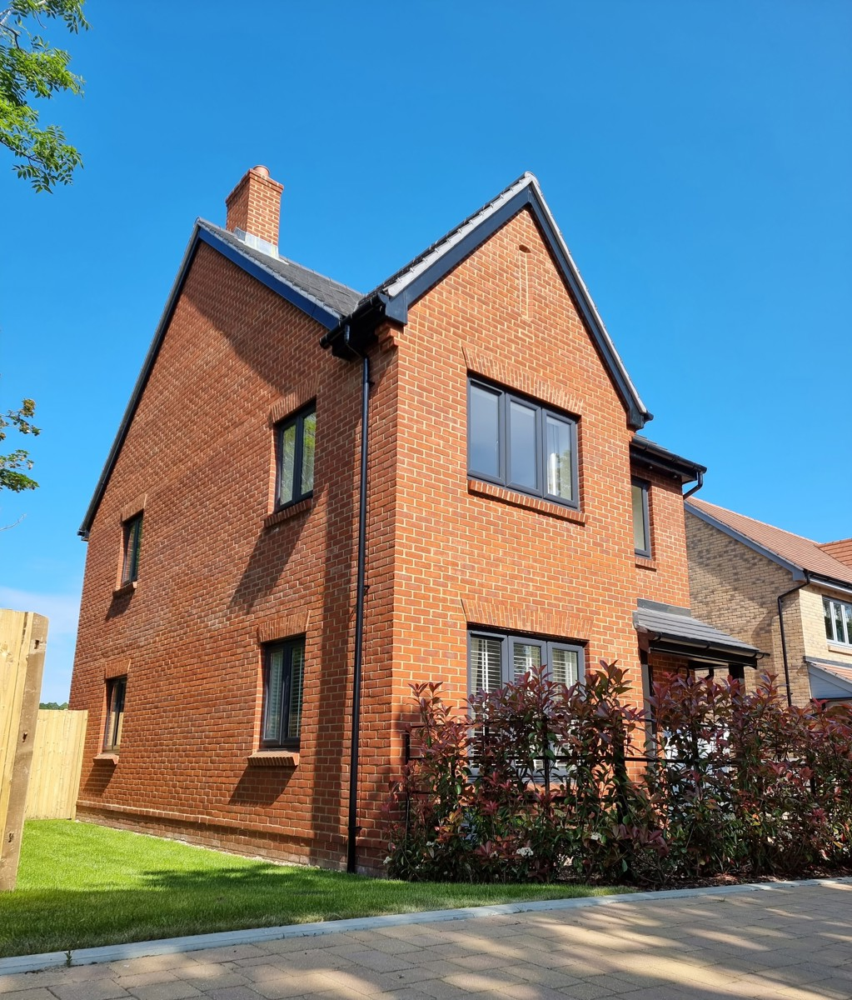
Get Your Free Survey Today
Whether your pointing is crumbling, your brickwork has seen better days, or you simply want a professional opinion, Garry is ready to help. Contact us for a free, no-obligation survey.
Contact Us Now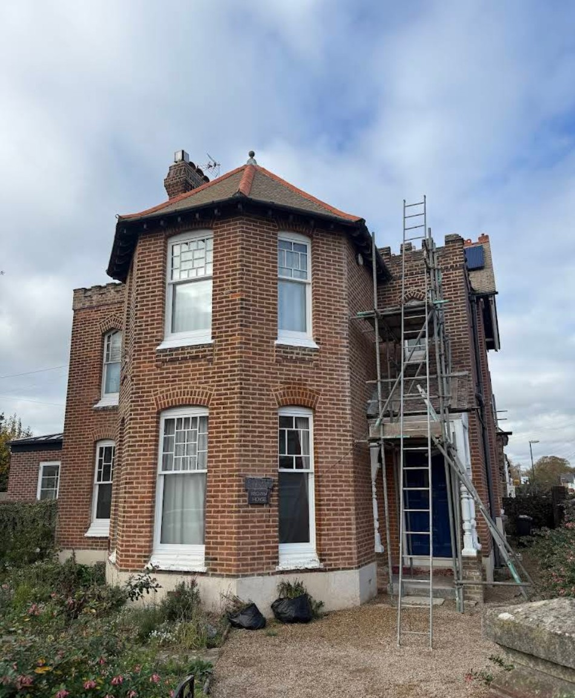